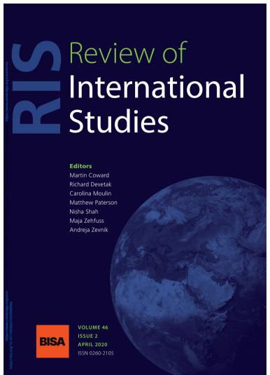

收录于合集 #新刊速递 123个
期刊简介

Review of International Studies （《国际研究评论》）是由剑桥大学出版社代表英国国际研究协会出版且同行评审的国际关系学术期刊，其前身为British Journal of International Studies (1975 - 1980) 。该期刊致力于反映全球政治的性质变化和新兴的政治挑战，旨在为国际社会搭建一个可供辩论的平台用以讨论当下紧迫的全球议题。2018年该期刊的影响因子为1.791。
本期编委
【 编译 】王泽尘 李玉婷 周玫琳 崔宇涵 施榕 陈勇
【 校对 】吴皓玥
【 审核 】 施榕
【排版】 王国伟
本期目录
1. Family matters in racial logics: Tracing intimacies, inequalities, and ideologies
种族逻辑中的家庭问题:追踪亲密关系、不平等和意识形态
2. Torture and sexual violence in war and conflict: The unmaking and remaking of subjects
of violence
战争和冲突中的酷刑与性暴力：暴力主体的破坏与重塑
3. Populist stories of honest men and proud mothers: A visual narrative analysis
关于“正直的男人”与“自豪的母亲”的民粹主义故事：一项视觉叙事分析
4. Peacebuilding without peace? On how pragmatism complicates the practice of inter-national intervention
没有和平的和平建构？实用主义如何使国际干预的实践复杂化
5. International refugee protection and the primary institutions of international society
国际难民保护和国际社会的首要制度
6. Colonies, semi-sovereigns, and great powers: IGO membership debates and the ****transition of the international system
殖民地、半主权行为体和大国：围绕政府间国际组织成员资格的争论和国际体系的转变
1.
种族逻辑中的家庭问题:追踪亲密关系、不平等和意识形态
【 题目 】Family matters in racial logics: Tracing intimacies, inequalities, and ideologies
【 作者 】V. Spike Peterson。斯派克·彼得森 (V. Spike Peterson) 是亚利桑那大学政府与公共政策学院的国际关系学教授，同时在性别与妇女研究系、LGBT研究所、拉丁美洲研究中心和国际研究中心担任职务。
【 摘要 】
这篇文章试图增进人们对亲密关系和种族逻辑是如何共同构成的理解，即在经济不平等、民族民粹主义、反移民言论和仇外敌意的当代殖民遗产中，这两者是如何在主观上、文化上、物质上和政治上共同构成与作用的。解决这些危机情况是紧迫的，但关键的干预措施表明，现行的解释方法没有充分地处理当今运行的种族主义中的规模、复杂性和流动性。本文建议通过跨学科的学术研究和交叉分析来产生一个关于国家/民族形成过程、帝国遭遇、以及阐明“亲密关系如何构建世界”的合法化意识形态的谱系，从而“以其他方式”思考种族逻辑。政治集权化的深刻历史揭示出，对亲密、家庭关系的调节是成功的国家建设的一个组成部分，并且对于理解现代性的“种族差异”如何产生，以及“其他” (“非欧洲的”，不受欢迎的) 性别家庭的种族化如何在当代危机中发挥作用这些问题来说至关重要。将亲密关系，即“家庭”，定位在(与生俱来的)公民权、移民制度和政治经济框架中有助于阐明全球不平等的扩大，以及煽动民族主义和反移民敌对情绪的力量。强调亲密关系、整合典型的不同调查路线，推进了我们对当今通常不透明但激烈的种族主义及其全球问题影响的分析。
This article seeks to advance our understanding of how intimate relations and racial logics are co-constituted and matter – subjectively, culturally, materially, and politically – in our colonial present of economic inequalities, nationalist populisms, anti-migrant discourses and xenophobic hostilities. Addressing these crisis conditions is urgent, yet critical interventions indicate that prevailing accounts inadequately address the scale, complexity, and fluidity of racisms operating today. This article proposes to think racial logics ‘otherwise’ by drawing on interdisciplinary scholarship and intersectional analytics to produce a genealogy of state/nation formation processes, imperial encounters, and legitimating ideologies that illuminates how ‘intimacy builds worlds’. A deep history of political centralisation reveals that regulation of intimate, familial relations is a constitutive feature of successful state-making and crucial for understanding how modernity’s ‘race difference’ is produced and how the racialisation of ‘Other’ (‘non-European’, undesirable) sexual familial practices figures in contemporary crises. Locating intimate relations – ‘family’ – in (birthright) citizenship, immigration regimes, and political- economic frames helps clarify the amplification of global inequalities and the power of stigmatisations to fuel nationalist attachments and anti-migrant hostilities. Foregrounding intimacy and integrating typically disparate lines of inquiry advances our analyses of today’s often opaque yet intense racisms and their globally problematic effects.
【 编译 】王泽尘
【 校对】吴皓玥
【审核】施榕
2.
战争和冲突中的酷刑与性暴力：暴力主体的破坏与重塑
【 题目 】Torture and sexual violence in war and conflict: The unmaking and remaking of subjects of violence
【 作者 】Harriet Gray：约克大学政治系讲师；Maria Stern：哥德堡大学全球研究系教授；Chris Dolan：马凯雷雷大学难民法项目主任。【 摘要 】
尽管现在有大量的与冲突有关的性暴力的知识，但是人们并不了解，在带有全球话语和本土话语、以及为支持方案提供基础的分类（背景）的对话中，这种暴力的受害者/幸存者自身如何理解和界定他们的经历。这种意义建构十分重要，不仅因为对暴力的分类方式影响受害者/幸存者获得特定形式的认可和支持的能力，还因为它是（受害者/幸存者）在遭受暴力之后如何重塑破碎的自我和世界的核心。本文以对居住在乌干达坎帕拉的难民进行的个人和集体访谈为基础，描述了在遭受暴力之后作为主体重塑自我的参与者的叙述中，“酷刑”和“性暴力”的界定是如何发挥作用的。作者追踪参与者如何了解塑造其主观性的异性恋社会的社会和法律规范，并通过这些术语在他们的叙述中所发挥的极具性别含义和政治含义的作用，了解遭受暴力对他们的影响。因此，作者的分析强调注意在伤害分类的可变过程中涉及的政治利益。
Despite the wide repository of knowledge about conflict-related sexual violence that now exists, there remains a lack of understanding about how victims/survivors of such violence themselves make sense of and frame their experiences in conversation with global and local discourses and with the categorisations that underpin support programmes. Such sense-making is important not only because the ways in which violence is categorised shape a victim/survivor’s ability to access particular forms of recognition and support, but also because it is central in how shattered selves and worlds are remade in the aftermath of violence. Drawing on individual and group interviews conducted with refugees living in Kampala, Uganda, this article charts how framings of ‘torture’ and ‘sexual violence’ become meaningful in participants’ accounts in the (re)formation of themselves as subjects after violent victimisation. We trace how participants navigate the heteronormative societal and legal norms that shape their subjectivity and the effects of the violence they experienced through the deeply gendered and political work that these terms do in their narratives. Our analysis thus highlights and reminds us to pay attention to the political stakes involved in fluid processes of categorising injury.
【 编译 】 李玉婷
【 校对】吴皓玥
【审核】施榕
3.
关于“正直的男人”与“自豪的母亲”的民粹主义故事：一项视觉叙事分析
【 题目 】Populist stories of honest men and proud mothers: A visual narrative analysis
【 作者 】Katja Freistein与Frank Gadinger，两位均是德国杜伊斯堡埃森大学全球合作研究中心高级研究员。
【 摘要 】
通过对图像和叙事的研究，本文提出一种视觉叙事分析（visual narrative analysis）的方法论框架。作者对政治故事叙说（political storytelling）的吸引力怀有兴趣。在应用分层阐释这一方法的过程中，他们通过研究图像与口号来思考在它们的政治与文化环境中更复杂的潜在叙事。本文探索性的案例研究利用德英两国右翼民粹主义政党的选举活动海报来展开分析。作者发现，利用给政治增添幻想的“幻象逻辑（fantasmatic logic）”运作，叙事将其激进的目的去政治化、加以伪装，并通过将同意（consent）可取化来获得支持。他们举出两个叙事范例：“威胁下诚实的男人”与“骄傲的母亲”。这两个范例加固了与父权制和民族主义相对应的传统性别角色。理论上说，本文的方法对如下两方面的国际关系学科争论有所贡献：一是国际政治中的文化基础，二是通过共享或分裂叙事进行的集体身份建构。在分析处于与文本的有效关系中的视觉描述时，视觉叙事分析提供了一种有前景的方法论工具。这种方法强调政治故事叙说通过幻象吸引力获得的权力，并增进对全球民粹主义崛起（现象）的理解。
This article proposes the methodological framework of visual narrative analysis through the study of images and narratives. We are interested in the appeal of political storytelling. In applying an approach of layered interpretation, we study images and slogans to consider the more complex underlying narratives in their political and cultural context. Our exploratory case studies draw on material from right-wing populist parties, namely election campaign posters from Germany and the UK as material for the analysis. We find that narratives operate with a ‘fantasmatic logic’, which adds fantasy to politics, to depoliticise and camouflage their radical intent and gain approval by making consent desirable. We identify two exemplary narratives (honest men under threat; proud mothers) that entrench traditional gender roles in accordance with patriarchy and nationalism. Theoretically, our approach contributes to debates in IR on cultural underpinnings in international politics and the construction of collective identities through shared/divided narratives. Visual narrative analysis provides a promising methodological tool for analysing visual representations in their productive relationship with text. This perspective foregrounds the power of political storytelling through fantasmatic appeal and fosters a better understanding of the global rise of populism.
【 编译 】 周玫琳
【 校对】吴皓玥
【审核】施榕
4.
没有和平的和平建构？实用主义如何使国际干预的实践复杂化
【 题目 】Peacebuilding Without Peace? On How Pragmatism Complicates the Practice of International Intervention
【 作者 】Pol Bargués，巴塞罗那国际事务中心（Barcelona Centre for International Affairs，CIDOB）研究员。
【 摘要 】
国际关系领域的文献强烈批评自由主义和平的侵入性及其自上而下的本质，这有助于重新诠释对受冲突影响的社会的国际干预的实践。今日，维持和平的政策方针促进了较长期的使命，使外部的实践者发挥次要作用，并越来越多地承担着风险和失败。引人注目的是，即使这些政策话语承诺将和平建构从占主导地位的、自上而下的自由主义干预模式中解放出来，但对此人们的情绪仍然是绝望的。通过借鉴约翰·杜威（John Dewey）有关实用主义的著作以及采访波斯尼亚和科索沃的实践者，本文思考了实践者发现自己所置身的困境，分析了其挫折的来源，并展望了维持和平的方向。实用主义预示着“没有和平的和平建构”思想，鼓励实践者去试验，将行动放在首位，不抱着成功的希望以及（建立）理想世界的梦想去探索这个世界。
The International Relations (IR) literature has strongly criticised the invasive and top-down nature of liberal peace, facilitating a reinterpretation of the practice of international intervention in conflict-affected societies. Today, sustaining peace policy approaches advance longer-term missions, give a secondary role to external practitioners, and increasingly accept risks and failures. What is striking is that even when these policy discourses hold out the promise of liberating peacebuilding from dominant and topdown models of liberal intervention, the mood in the field is one of despair. By drawing on John Dewey’s work on pragmatism and interviewing practitioners in Bosnia and Kosovo, the article reflects on the morass practitioners find themselves, diagnoses the source of the frustrations, and anticipates the direction of sustaining peace. Pragmatism adumbrates the idea of ‘peacebuilding without peace’, encouraging practitioners to experiment, give primacy to their doings and explore this world without hope of success and dreams of otherworldliness.
【 编译】崔宇涵
【 校对】吴皓玥
【审核】施榕
5.
国际难民保护和国际社会的首要制度
【 题目】 International refugee protection and the primary institutions of international society
【 作者 】Olivia Nantermoz， 伦敦政治经济学院博士研究生。
【 摘要 】
难民即使不是国际社会的根本威胁，也经常被认为是造成混乱的根源。与此相反，本文从英国学派的视角出发，认为难民的形象是构成现代国际社会及其行为体——主权国家的基础。因此，难民保护是国际社会的一个首要制度。从对首要制度的概念和方法上的考虑出发，本文强调了长期而广泛地给予（难民）庇护的国家实践。研究表明，一方面，难民的形象有助于巩固支撑现代国家体系的民族/国家/领土之三位一体,并使其变得理所当然；另一方面，保护难民在将国家主义者的自我认同建构为自由主义者、人道主义者和利他主义者等方面发挥着核心作用。文章的最后一节讨论了关于难民保护的政治争论，考察了美国、匈牙利和澳大利亚的“反对难民”政策在国内、地区和国际等层面上引起的反应。有人认为，这些限制性政策所引起的大量批评证明了难民保护在国际社会中(以及对国际社会)的持久重要性和意义。
Refugees are often considered as a source of disorder if not fundamental threat to international society. In contrast, and drawing from an English School approach, this article argues that the figure of the refugee is foundational to the constitution of both modern international society and its agent, the sovereign territorial state; hence refugee protection represents a primary institution of international society. Starting with conceptual and methodological considerations for studying primary institutions, the article then highlights the longstanding and widespread state practice of granting asylum. It is shown that on the one hand, the figure of the refugee serves to consolidate and naturalise the nation/state/territory trinity underpinning the modern state system; and on the other hand, protecting refugees plays a central role in the construction of statist self-identities as liberal, humanitarian, and altruistic agents. The last section of the article turns to the politics of contestation of refugee protection, examining domestic, regional, and international reactions to ‘anti-refugee’ policies in the United States, Hungary, and Australia. The considerable amount of criticism generated by these restrictive policies, it is argued, evidence the enduring importance and relevance of refugee protection in (and for) international society.
【 编译】施榕
【 校对】吴皓玥
【审核】施榕
6.
殖民地、半主权行为体和大国：围绕政府间国际组织成员资格的争论和国际体系的转变
【 题目】 Colonies, semi-sovereigns, and great powers: IGO membership debates and the transition of the international systems
【 作者 】Ellen J. Ravndal，挪威斯塔万格大学（University of Stavanger） 媒体与社会科学系副教授，主要研究领域为国际组织和19世纪的国际关系史。
【 摘要 】
从帝国组成的世界向围绕主权国家组织起来的全球国际体系的转变是如何发生的？本文试图通过考察两个重要的政府间国际组织中围绕成员资格的争论来追踪过去两个世纪中发生的转变。政府间国际组织是成员争论的场所，是国际体系的重要组成部分。政府间国际组织内部的讨论反映并形塑了更广泛的国际规范，同时也是国际体系中解决成员国资格和相应的权利及义务等问题的一种机制。本文发现，政府间国际组织在这一转变期的成员国资格政策反映了三种竞争性原则——大国特权、“文明标准”和主权平等之间不同的妥协。本文对全球国际关系学的贡献在于确证了非西方行为体的能动性对于引发这一转变的重要作用。非洲、亚洲和拉美国家支持并推动了主权标准的采纳。在这一过程中，具有矛盾性的一点是：“欧洲”国际体系的构成性规范之一——主权平等的原则是经非欧洲行为体的手得以实现的。
How did the transition from a world of empire to a global international system organised around the sovereign state play out? This article traces the transition over the past two centuries through an examination of membership debates in two prominent intergovernmental organisations (IGOs). IGOs are sites of contestation that play a role in the constitution of the international system. Discussions within IGOs reflect and shape broader international norms, and are one mechanism through which the international system determines questions of membership and attendant rights and obligations. The article reveals that IGO membership policies during this period reflected different compromises between the three competing principles of great power privilege, the ‘standard of civilisation’, and universal sovereign equality. The article contributes to Global IR as it confirms that non-Western agency was crucial in bringing about this transition. States in Africa, Asia, and Latin America championed the adoption of the sovereignty criterion.In this, paradoxically, one of the core constitutional norms of the ‘European’ international system – the principle of sovereign equality – was realised at the hands of non-European actors.
【 编译】陈勇
【 校对】吴皓玥
【审核】施榕
【新刊速递】第13期|Chinese Journal of International Politics, No.4, 2019
【新刊速递】第14期|Chinese Journal of International Politics, No.3, 2019
【新刊速递】 第15期 | International Organization, No.4, 2019
【新刊速递】第16期 | International Studies Quarterly, No.4, 2019
【新刊速递】第17期 | World Politics, Vol.72, No.1, 2020
【新刊速递】 第18期 | Security Studies Vol.28, No.5, 2019
【新刊速递】第19期 | Review of International Studies, No.1, 2020
【新刊速递】第20期 | International Studies Quarterly, No.4, 2019
【新刊速递】第21期 | International Studies Quarterly, No.4, 2019
【新刊速递】第22期 | Security Studies Vol.29, No.1, 2020
【新刊速递】 第23期|Cooperation and Conflict,Vol.55, No.1, 2020
【新刊速递】 第24期 | International Organization, Vol. 74, No.1, 2020
国政学人
支持学术公益与知识传播
微信扫一扫赞赏作者 __赞赏
已喜欢，对作者说句悄悄话
取消 __
发送给作者
发送
最多40字，当前共字
上一页 1/3 下一页
长按二维码向我转账
支持学术公益与知识传播
受苹果公司新规定影响，微信 iOS 版的赞赏功能被关闭，可通过二维码转账支持公众号。